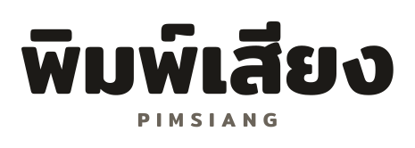
แนวทางการใช้แบรนด์ PimSiang
นกขุนทองคือนกที่ขึ้นชื่อเรื่องพูดตามได้ ใน PimSiang มันฟังสิ่งที่คุณพูดแล้วพิมพ์กลับมาให้ หน้านี้สรุปโลโก้ สี ฟอนต์ นกในแต่ละท่า และการเคลื่อนไหว ไฟล์ต้นฉบับอยู่ในโฟลเดอร์เดียวกัน ใช้ SVG เป็นหลัก ส่วน PNG อยู่ใน exports/
1. โลโก้และไอคอนแอป
คำว่า "พิมพ์เสียง" ตั้งด้วย Mitr 600 แปลงเป็น path แล้ว ห้ามพิมพ์เป็นข้อความเอง
pimsiang-wordmark.svg
pimsiang-wordmark-dark.svg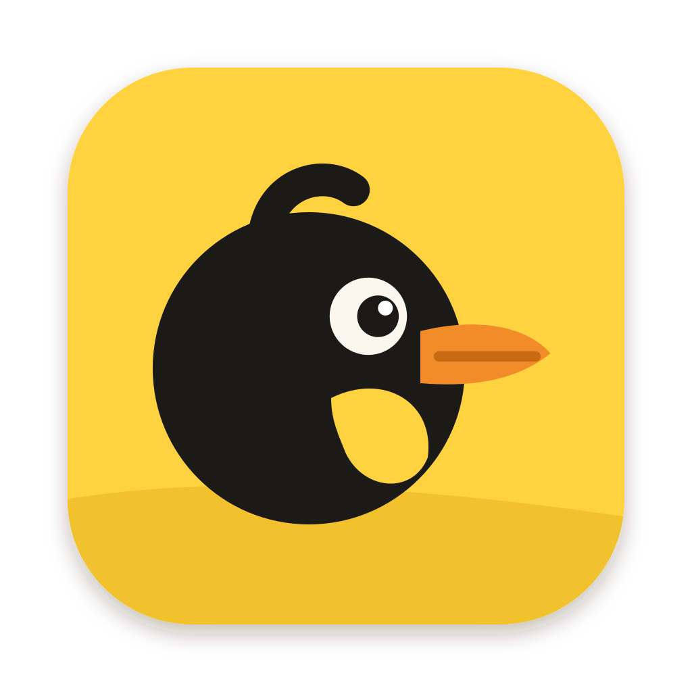
pimsiang-icon.svg, PimSiang.icns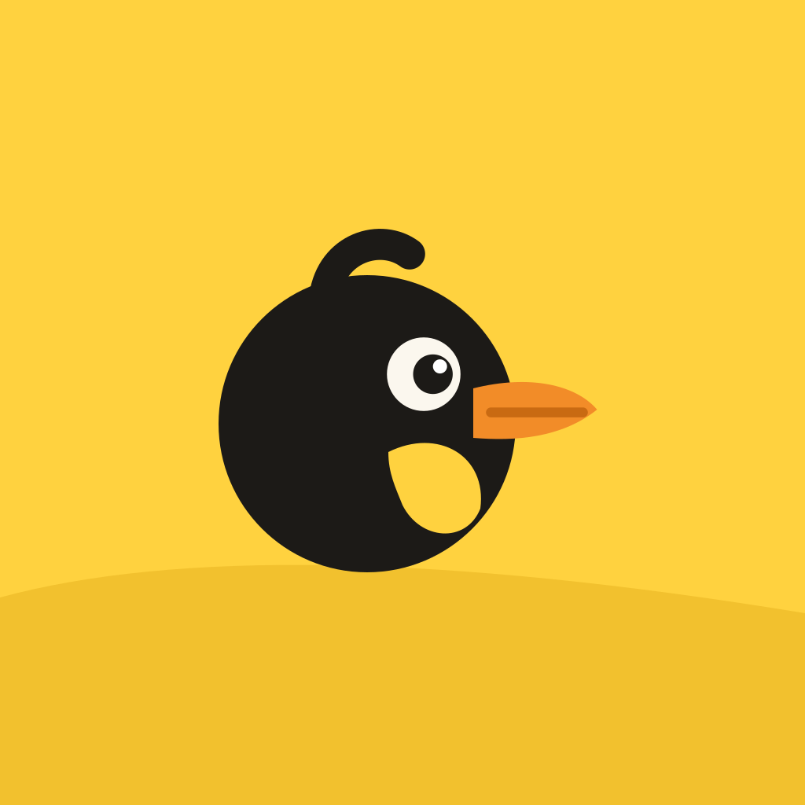
pimsiang-icon-maskable.svg2. สี
สีทั้งหมดมาจากนก: ขนดำ เหนียงเหลือง ปากส้ม บนกระดาษครีม ใช้ Live แดงเฉพาะสถานะกำลังบันทึก
#1C1A17
ตัวอักษร ตัวนก ปุ่มหลัก
#FFD23F
ไอคอน ตัวเน้น ข้อความบนปุ่มหลัก
#F28C28
ปากนก เครื่องหมายคำถาม
#FBF7EE
พื้นหลังสว่าง
#E5484D
กำลังบันทึก คลื่นเสียง
#6B645A
ข้อความรอง
#E8E0CF
เส้นแบ่ง ขอบ
#F6F1E4
แถบข้าง พื้นการ์ด
#FFE89A
รายการที่เลือก
โหมดมืดใช้พื้น #16140F และ #1F1C17 ตัวอักษร Paper เน้นด้วย Wattle ปุ่มหลักในโหมดมืดเป็น Wattle พร้อมตัวอักษร Feather (กลับด้านจากโหมดสว่าง)
3. ตัวอักษร
ชื่อหน้าต่างและหัวข้อ เท่านั้น ฟอนต์โค้งมน SIL Open Font License ใช้ได้ฟรีจาก Google Fonts
ฟอนต์ที่ฝังอยู่ในแอปแล้ว มีทั้งไทยและละติน
4. นกในแต่ละท่า
ไฟล์ mascot/pimsiang-myna-<pose>.svg (viewBox 120 × 120) สำหรับพื้นสว่าง และ -dark.svg สำหรับพื้นมืด นกเป็นของประกอบ ข้อความต้องบอกความหมายเสมอ
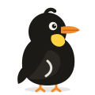
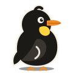
defaultภาพประกอบทั่วไปที่ไม่มีข้อความเฉพาะ หัวหน้าต่างตั้งค่าใช้เฉพาะหัว
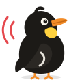
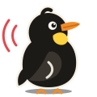
listeningกำลังบันทึกเสียงและแสดงข้อความระหว่างพูด
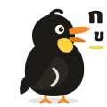
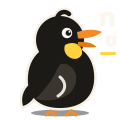
writingกำลังถอดเสียง และตอนดาวน์โหลดโมเดล
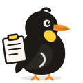
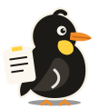
noteบันทึกโน้ตด่วนแล้ว
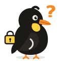
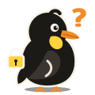
confusedยังไม่ได้ให้สิทธิ์ (ไมโครโฟน การช่วยเหลือพิเศษ การเฝ้าดูคีย์บอร์ด)
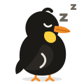
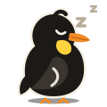
sleepingพักโมเดลเมื่อไม่ได้ใช้ และหน้าประวัติที่ยังว่าง
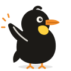
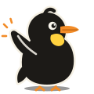
wavingต้อนรับและขั้นตอนตั้งค่าครั้งแรก
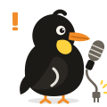
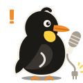
oopsไมโครโฟนหลุดหรือเกิดข้อผิดพลาด และประวัติที่เปิดไม่ได้
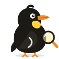
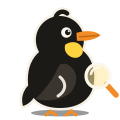
searchingค้นหาในประวัติแล้วไม่พบ
หนึ่งหน้าต่าง หนึ่งท่า: แต่ละหน้าต่างหรือหน้าแสดงนกเต็มตัวได้ไม่เกินหนึ่งท่า หัวนกที่หัวหน้าต่างเป็นเครื่องหมายแบรนด์ ไม่นับ ห้ามใส่นกตัวเล็กในการ์ดหรือแถบความคืบหน้า
5. หัวนกขนาดเล็กและไอคอนแถบเมนู
ต่ำกว่า 64 px ให้ใช้หัวอย่างเดียว (Pill ใช้ 16–32 px) ตัวเต็มตัวจะเละ
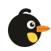
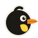
head-default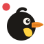
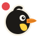
head-listening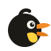
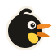
head-writing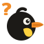
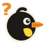
head-confused128
64
32
16
pimsiang-menubar*.svg| รูป | ขาวดำ แบบ template ดวงตากับเหนียงเจาะเป็นช่องว่าง |
| สถานะ | เป็นจุดเล็กๆ ที่มุม ไม่เปลี่ยนสีของทั้งรูป (macOS ย้อมสีรูป template เอง) |
6. พื้นสว่างและพื้นมืด
- เลือกไฟล์ตามพื้นหลังเสมอ ตัวนกสีดำบนพื้นมืดจะหาย
-dark.svgเพิ่มขอบครีม (#F6F1E4) รอบตัว และปรับเงา ปีก และไม้ถือให้สว่างขึ้น - Pill เป็นแคปซูล Feather เสมอ จึงใช้หัวแบบ
-dark - พื้นเหลือง Wattle ใช้กับไอคอนแอปเท่านั้น
7. ขนาดต่ำสุดและพื้นที่ว่าง
| รายการ | ขั้นต่ำ |
|---|---|
| นกเต็มตัว | 64 px สูง |
| หัวนก | 16 px |
| ไอคอนแถบเมนู | 18 px (วาดที่ 18 pt, ส่งออก 2x และ 3x) |
| ไอคอนแอป | 16 px |
| Wordmark | กว้าง 96 px |
| พื้นที่ว่างรอบโลโก้ | อย่างน้อยเท่าความสูงของตัว "พ" ใน wordmark |
8. ห้ามทำ
- ไม่วาดนกท่าใหม่เอง ไม่ใช้อีโมจิแทนนก ไม่ใส่เงาหรือไล่สีให้ SVG
- ไม่ใช้ Live แดงกับอย่างอื่นนอกจากกำลังบันทึก
- ไม่ตั้ง "พิมพ์เสียง" ด้วยฟอนต์อื่นแทน wordmark
- ไม่ให้นกอยู่ในข้อความเตือนที่โทษผู้ใช้ น้ำเสียงเป็นมิตรเสมอ
9. การเคลื่อนไหว
ช้าและนุ่ม ใช้เฉพาะที่สื่อสถานะ ไฟล์ SVG ในโฟลเดอร์นี้นิ่ง ถ้าทำให้ขยับ ต้องหยุดเมื่อผู้ใช้เปิด prefers-reduced-motion: reduce ตัวอย่างด้านล่างเป็นไปตามกฎนั้น
10. ในแอป
- Setup (ท่าเดียวที่ hero ตามสถานะรวม):
wavingยังมีขั้นตอนเหลือ ·writingเหลือแค่ดาวน์โหลดโมเดล ·confusedมีสิทธิ์ที่ถูกปฏิเสธ ·defaultเสร็จทั้งหมด - History ว่าง:
sleeping· ไม่พบ:searching· เปิดประวัติไม่ได้:oops· ยังไม่ได้ให้สิทธิ์:confused· หัวหน้าต่างตั้งค่า: หัวdefault - Pill: หัวนกแทนจุดสี กำลังฟัง = หัวฟังพร้อมจุดแดง, ถอดเสียง = หัวพิมพ์, ผิดพลาดหรือขาดสิทธิ์ = หัวสงสัย